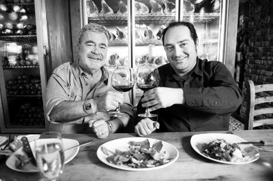

“Bir oturuşta 38 dilim pizza yedim”
Çocukluk yıllarınızda da iştahınız yerinde miydi?
Hep çok sağlam bir yiyiciydim. Hayatımın birçok döneminde ciddi kilo aldığım, verdiğim oldu. Beni ilkokuldan tanıyan ve sonra yirmi sene hiç görmemiş bir arkadaşımla karşılaşsam, herhalde benimle ilgili hatırladığı birkaç şeyden biri “Bu adam çok sağlam yemek yerdi” olurdu. Çocukken çok kilolu değildim, ama hep gürbüz bir çocuktum.
Ailenizin yemekle arası nasıldı?
Çok iyidir. Yedi yaşına kadar anneannemle, dedemle, teyzemlerle büyüdüm. Annemle babam görev icabı Anadolu’nun farklı şehirlerindeydiler. Sağlam bir Anadolu mutfağının yemeklerini yiyerek yetiştim, onun için sağlam bir damak tadına sahibim. Bütün aile iyi yerdi, sofralarımız zengindi.
Çocukluğunuzun mutfağından neler hatırlıyorsunuz?
Dede tarafım Trabzonlu olduğu için çok lezzetli hamsili pilav yapılırdı. Çok fazla balık yerdik; lakerda, midye dolması ve deniz mahsullerini köküne kadar yediğimi söyleyebilirim. Köftenin her türlüsü yapılırdı. Sulu köftesinden, Akçaabat köftesine kadar... Evimizde hiçbir zaman tek çeşit yemek olmazdı; zeytinyağlısından, pilakisinden mezelerine kadar her çeşit bulunurdu. Bizde yemek karın doyurmak için değil de keyif almak için yenirdi. Trabzon’dan çok malzeme gelirdi. O zaman bugünkü gibi her yerde Trabzon ekmeği yapan fırınlar yoktu. Oradan gelenlere ekmek ısmarlanırdı. Trabzon’dan gelen özel tereyağıyla yapılan pilavın yanında mutlaka et yemeği bulunurdu.
Evde mutfağın hâkimi kimdi?
Anneannemdi, mutfak onun alanıydı. Teyzem ve annem de girerlerdi ama onlar anneannemin talimatları doğrultusunda hareket ederlerdi. Anneannem Eskişehirliydi ama hep farklı yerlerde yaşamışlardı. Ağırlıklı olarak köfte yapılırdı, hamur işleri de olurdu. Köftenin yaklaşık on çeşidini yediğimizi bilirim.
Anneannenizin o yıllarda pişirdiği ve hiç aklınızdan çıkmayan yemeği hangisiydi?
Hamsili pilav. Benim için öyle bir şeydi ki, her gün her öğün önüme konsa yiyebilirdim. Bu arada çok sık olmasa da ben de yaparım. Hamsili pilav ayda bir pişerdi. Köfte, pilav, patates, biftek, bonfile gibi yemekleri de çok severdim; bunlarla büyüdüm. Etsiz ve pilavsız bir yaşam düşünemiyorum.
Sizin mutfakla aranız nasıl, yemek yapıyor musunuz?
Yemek yapmayı biliyorum, kötü de yapmam ama sürekli mutfakta olan biri değilim; ben daha çok yeme tarafındayım. Yakın dostlarım geldiğinde onlara birkaç şey yaparım. Mesela hamsili pilav yaparım; içpilavın bizim aileden gelen belirli bir kıvamı var. Hamsinin boyu ve zamanı çok önemli. Dereotu ve maydanoz koymam, pilavda yeşillik olsun istemem. Hamsinin etli olması bence makbul. Hamsileri tepsiye dizip, üstüne içpilavı koyarım, üstünü yine hamsiyle kaplayıp, 240 derece fırında 45 dakika pişiririm. Nar gibi nefis bir şey çıkar ortaya. Hamsili pilavla kırmızı şarap çok güzel gider.
Şarapla da sıkı bir dostluğunuz var galiba...
O kadar iddialı değilim ama eskiden yemeğin yanında kola, ayran, su içerken artık yemekle şarap içiyorum. Yemekle beraber şarap tüketmeyi seviyorum, onun için de şarabı öğrenmeye çalışıyorum. Hangi üzüm, hangi yılın hasadı, rengi, kokusu derken yavaş yavaş bu işin içine girdim.
Lezzetli bir yemeğin peşine düşüp yolculuğa çıktığınız oluyor mu?
Gideceğim yerdeki yemek kültürü ve restoran kalitesi benim için çok önemli. Sadece bir yemek için kalkıp bir yerlere gitmiyorum, ama gittiğim yerdeki en lezzetli yemekleri bulmaya çalışıyorum.
İstanbul’da yemek keşfetmeyi seviyor musunuz?
Salaş yerleri severim, mesela Fatih’teki Antakya Sofrası’nı, Ümraniye’deki Lider’i, Sütlüce’deki Sadrazam’ı...
Dünya mutfaklarından favorileriniz hangileri?
Arjantin, Brezilya ve İspanya mutfağını beğeniyorum. Valencia’ya, Barselona’ya gittiğinizde başka bir mutfaktan bahsediyorsunuz, Galiçya’ya gittiğinizde et ön plana çıkıyor, kuzeyde bambaşka bir mutfakla karşılaşıyorsunuz. O mutfakların kombinasyonları çok çok hoşuma gidiyor. Pirinci çok güzel kullanan bir mutfak, mezeleri de bizim kültürümüze çok yakın. Dünyada çok iyi mutfak olarak bilinen Tayland ve Kore mutfaklarını sevmiyorum. Sosların kombinasyonları bana hitap etmiyor.
Yemeklerin afrodizyak etkileri olduğuna inanır mısınız?
Yemeğin içeriğine göre değil de kimin pişirdiğine, yediğim ortama ve kiminle yediğime göre değişebilir bu etki.
Yemekte sağlığa mı, lezzete mi önem verirsiniz?
Tabii ki lezzete. Ben galiba yemek için yaşayanlar grubuna daha yakınım. Keyifli bir yemek beni bambaşka bir yere çekebiliyor. Güzel bir yemek yiyeceğimi bildiğim zaman saatler öncesinden yemek moduna girerim.
Gece buzdolabından bir şeyler aşırdığınız olur mu?
Genellikle Nutella aşırırım. Yeme kapasitemde limit yoktur, “Gırtlağıma kadar doydum, daha fazla yiyemem” lafını hiç kullanmam. Bu bir sorun, çünkü sürekli yiyorum. Lisede “yiyebildiğin kadar pizza ye” promosyonları vardı, 38 dilim pizza yerdim o zaman...
Tatlı ve sakatatla aranız nasıl?
İşkembe sevmem ama uykulukla aram çok iyidir, sucuğu çok severim. Bizim ülkemizde yurtdışından daha iyi sucuk yapıldığını düşünüyorum. Kokoreci çok severim. Tatlıya gelince, İmam Çağdaş’ın Antep’ten gelen baklavasını veya Trabzon’daki Laz böreğini çok severim. Bunların dışında genelde sütlü tatlılara gidiyorum. Sütlacı da çok severim, kazandibi, tavukgöğsü de sevdiğim tatlılardan.
Peki, sokak yemekleriyle aranız nasıl?
İyidir. Kokoreçte favorilerim Şampiyon ile Mercan’dır, bunlar klasik isimlerdir. Tantuniyi de çok severim, son zamanlarda İstanbul’da da tantunicilerin sayısı arttı. Mersin mutfağının bu lezzetli yemeğinden yıllar boyunca mahrum kalmışız meğer. Midyenin her türlüsünü yerim. Midye yediğim belli yerler var ve onlara güveniyorum; bir oturuşta 70-80 tane yerim.
Bursa’da okumuşsunuz. Bursa mutfağıyla aranız nasıl?
Şanslıydım, çünkü yine bir et şehrine gitmiştim. Genelde İskender kebabı ve döneriyle bilinen Bursa’da aslında önemli bir köfte kültürü de vardır. İnegöl’ün köftesi ayrıdır, İznik’inki ayrı. Kayhan köftesi de vardır, pideli köfte de... Yani etin, sonuna kadar yoğun kullanıldığı bir mutfaktır. İstanbul’da uzun süre döner, İskender yiyemedim çünkü ben gerçeklerini yiyerek büyüdüm. Bursa tipi İskender son on yıldır bulunuyor. Ondan önce pidenin üstüne biraz döner koy, sonra salçayı bas; insan ne yediğini anlamaz... Halbuki Bursa’da salça ve tereyağın miktarına müşteri kendisi karar verir. Tereyağı, yemek masaya geldikten sonra müşterinin istediği kadar etin üstüne dökülür. Bir oturuşta altı porsiyon falan yerdim. Cevat Amca’nın Heykel’de küçük bir yeri vardı. Cevat Amca bana bir buçuk porsiyondan fazla vermezdi. “Bir buçuk porsiyonun üstüne bir buçuk daha yersen burayı bir daha hatırlamazsın. Şimdi bunu ye, tadı damağında kalsın ki yarın yine gelesin” derdi.
Yemek Sepeti’ni kurma fikrinin altında yemeğe düşkünlüğünüz rol oynadı mı?
Hem de çok... Biz o zaman için dünyada olmayan bir model kurduk. San Francisco’da bir sene kaldım ve benim yemeğe düşkünlüğüm kendini gösterdi. San Francisco, yemek kültürü olan bir şehir. Çin mutfağından İspanyol mutfağına kadar dünya mutfaklarından örnekleri bulmak mümkün. Eve ciddi anlamda yemek siparişi veriyordum. O dönemlerde bu sipariş sitelerini çok kullandım ve aşina oldum. Türkiye’de böyle bir şey yapsak diye düşünürken olay şekillendi.

New York, Londra gibi yemek ısmarlama alışkanlığı olan kentler de bile sizin kadar başarılı site yok. Bunun sırrı nedir?
Bunun çok net bir yanıtı yok. Somut bir şey söyleyemem, ama bizim yaptığımız birtakım detaylar var: Kullanıcıdan para almıyoruz, restorandan para almıyoruz, online kredi kartı kullanılmıyor. Bizden önce başlayanlar var ama hepsi batmış gitmiş, çünkü ufak detaylarda hata yapmışlar. Son zamanlarda onlar da işin doğrusunu keşfettiler, ama henüz yemeksepeti.com’un benzeri karşımıza çok fazla çıkmıyor. Yani biz batanların yanlışlarından ders çıkarıp ona göre bir sistem geliştirdik. Bu site ayrıca Türk insanının birtakım yeniliklere ne kadar açık olduğunu ve doğru biçimde hizmet verdiğinizde, bu tip yenilikleri hayatına almaya hazır olduğunu gösteriyor.
(4 Eylül 2011)